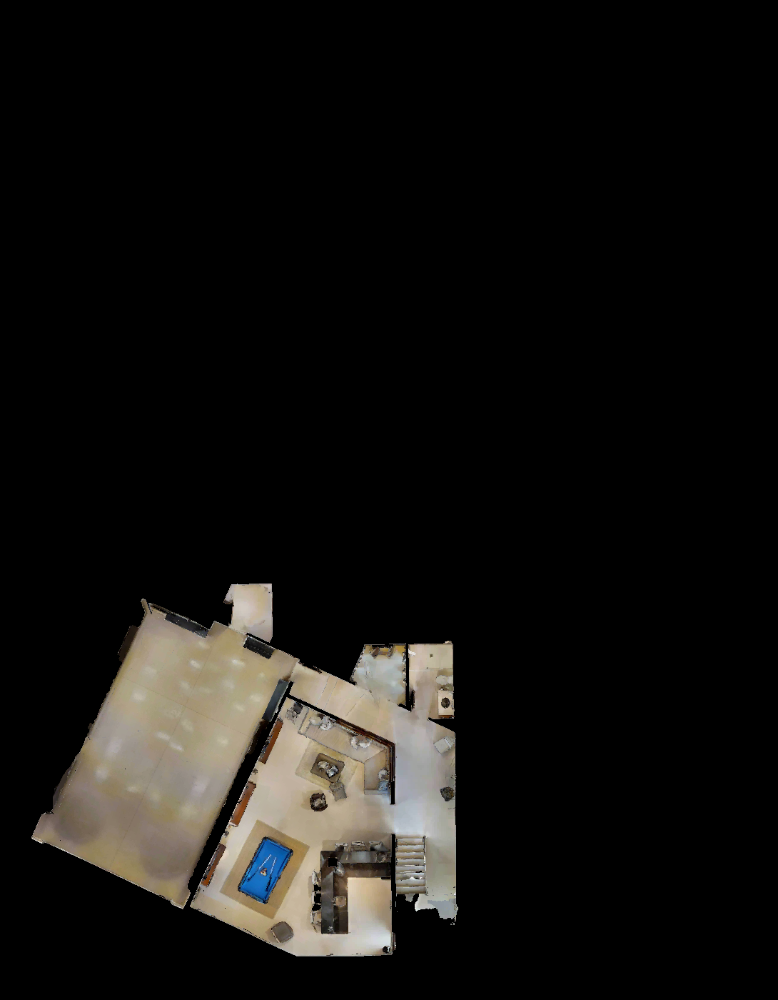

v2: 가까운 벽·가구를 보는 유효 관측을 유지합니다. 5LpN3gDmAk7_L1: 스캔 depth 결손 10% 미만은 유지하되, 2DFP 누락 영역 시야 검사는 유지합니다.
← 28개 층 목록유효 관측 289개 / 위치 58개. 자동 검사 결과이며 사용자 승인 대기입니다.

의견은 현재 브라우저에만 저장됩니다. 아래 버튼으로 JSON을 내보내 전달해주세요.
전체 픽셀 float32 furnished depth·pose·40-ray structural GT는 파일 서버의 UnLoc/capture_v2/scenes/p5wJjkQkbXX_L0/에 저장되어 있습니다. 이 페이지는 이미지와 GT 곡선 검토용입니다.